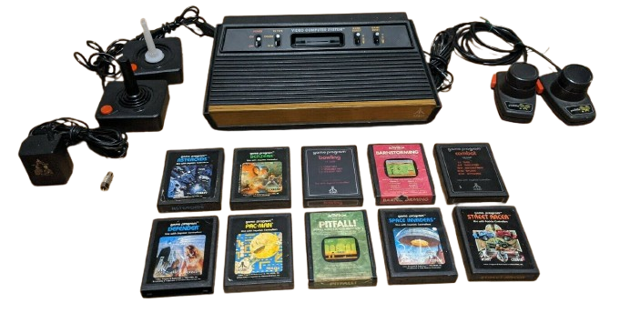
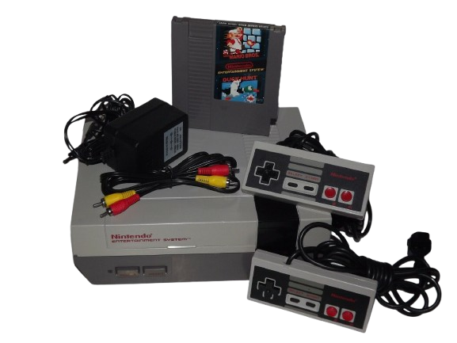
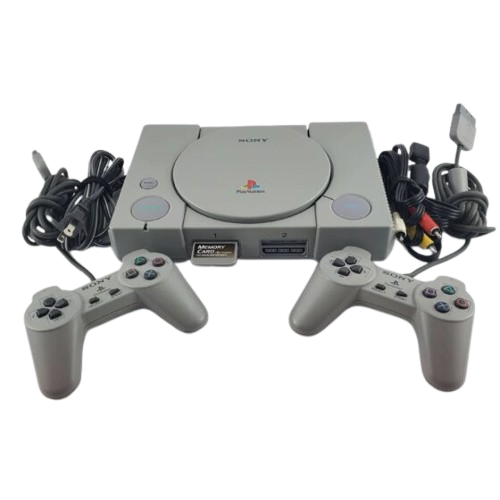
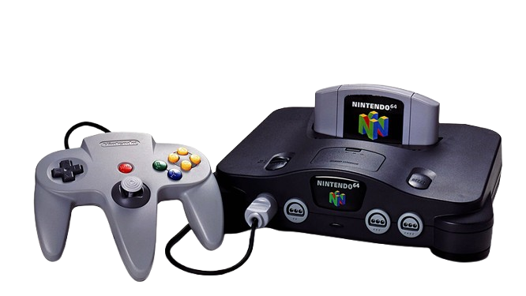

Atari 2600 (1977)
La consola que popularizó los videojuegos domésticos. Con juegos icónicos como Space Invaders y Pac-Man, el Atari 2600 definió una era.
Especificaciones:
- Procesador: MOS 6507 @ 1.19 MHz
- Memoria RAM: 128 bytes
- Resolución: 160x192 píxeles
- Colores: 128 colores posibles

Nintendo NES (1985)
La consola que revivió la industria de los videojuegos tras el crash de 1983. Hogar de franquicias legendarias como Mario y Zelda.
Especificaciones:
- Procesador: Ricoh 2A03 @ 1.79 MHz
- Memoria RAM: 2 KB
- Resolución: 256x240 píxeles
- Paleta de colores: 52 colores

PlayStation 1 (1994)
La primera consola exitosa en usar CD-ROM, revolucionó los videojuegos con gráficos 3D y una biblioteca de juegos extensa.
Especificaciones:
- Procesador: R3000A @ 33.8688 MHz
- Memoria RAM: 2 MB
- Gráficos: GPU personalizada
- Almacenamiento: CD-ROM

Nintendo 64 (1996)
La última gran consola en usar cartuchos, conocida por sus innovadores controles analógicos y juegos 3D revolucionarios.
Especificaciones:
- Procesador: NEC VR4300 @ 93.75 MHz
- Memoria RAM: 4 MB (expandible a 8 MB)
- Resolución máxima: 640x480
- Almacenamiento: Cartuchos hasta 64 MB